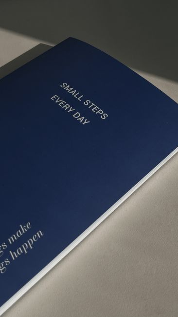

I have kept a habit tracking journal for decades now. Paper, not an app. A plain grid, the days of the month running down one side and whatever I am trying to build running across the top. I have crossed off thousands of boxes in that time.

Here is what changed. I still track. I track less than I used to, and what I track has almost nothing to do with the boxes anymore.
That took me longer to learn than I would like to admit. For a long stretch of those decades, my tracker was not helping me build anything. It was grading me.
You have probably felt some version of this yourself, even without decades of paper behind you. You open a fresh tracker with real enthusiasm. The first few boxes feel wonderful to fill in. Then the list grows. One habit becomes three. Three becomes ten. A tool that was supposed to support you starts asking something of you instead.
I know that shape because I lived inside it more than once. Water intake. Reading pages. Stretching. Meditation minutes. Every new interest I had turned into one more column on the grid, until keeping the tracker updated had become its own small job, sitting on top of the actual living I was supposedly tracking.
So this is the honest version of where I landed after all those years and all those grids. Tracking is a genuinely useful tool. It is also a tool that can turn on you the moment the boxes become the goal instead of the behavior they were meant to describe.
What A Tracker Is Actually Built To Do
1. Three Jobs, Not One
Every habit tracker I have ever kept, mine included, is trying to do three separate jobs at once.
- Reminder, so the habit does not slip your mind entirely.
- Motivation, the hope that watching a streak grow will make you not want to break it.
- Overview, a record you can look back on to see how you actually did, not how you remember doing.
The first job and the third job hold up fine over time. It is the second one, motivation, that falls apart the longer you lean on it.
2. Tracking Measures Consistency. It Does Not Create It.
By the middle of most Januaries, something subtle happens to nearly every fresh tracker in the world. The app or the notebook is still there, but it stops being part of the day. Checkmarks stop stacking up, not because the goal disappeared, but because the effort of logging outweighs whatever energy is left.
It is easy to read that as a failure of motivation. It is actually a structure problem. A tracker that only logs what already happened leaves every decision sitting entirely with you: when to start, what to do first, whether it is still worth doing after a missed day. When energy runs low, that whole chain breaks at the first link.
Tracking feels productive because it offers visibility. Visibility is not the same as action. Habit building does not happen the moment a box gets checked. It happens the moment you actually begin.
The Years My Own Grid Went Sideways
The rabbit hole
There was a stretch, maybe four or five years in, where my tracker stopped being a record and became a growing list of things I was supposed to be doing better. I would find a new tracker format, feel a rush of enthusiasm, use it faithfully for a while, then abandon it for another one that promised to finally be the system that worked. I went through this cycle more than once. Each time, the list of habits I was tracking only ever grew. It never shrank.
Somewhere underneath all of it sat a belief I never said out loud, that if I was not measuring something, it could not possibly be changing. That belief is exhausting to live inside. It turns even the habits meant to lower your stress into one more source of it.
Where the boxes started grading me
I can point to specific mornings where a blank square on the page did something to my mood that had nothing to do with the actual habit underneath it. A missed meditation sit did not just mean I skipped a sit. It meant, in some quiet corner of my head, that I was undisciplined. A skipped page of reading did not just mean I was tired. It meant I was falling behind. The number in the box had started standing in for my own worth, and I had stopped noticing when that swap happened.
That is not a small thing to admit, and it is not really about the tracker. The tracker just made the belief visible. A blank box is a remarkably efficient way to turn a bad day into proof of a bad person.
What I Changed
3. One Habit At A Time, Not Ten
The first real change was cutting the list down to one habit. Just one, chosen because it would make the most useful difference to my day, not because it looked impressive on the page. Tracking ten or fifteen things at once might look thorough in a fresh notebook, but it turns the tracking itself into another job, one more thing to remember, record, and process before the day is done.
More data does not always mean more progress. Some weeks it means less of both.
4. Decide What Counts Before You Start
Vague goals do not survive contact with a grid. Be productive is too vague to ever honestly check off. Complete one sit of meditation, or write for ten minutes, or walk before lunch, those are specific enough to actually mark as done or not done. Deciding the rule in advance keeps me from moving the goalposts on a hard day, which is its own kind of self punishment I have gotten better at catching.
The review matters more than the boxes
These days the boxes themselves barely interest me. What I actually sit with, usually once a week rather than every single day, is a short page of writing. What worked. What got in the way. Whether the habit made any real difference to how I felt, or just added to the pile of things I was supposed to be doing. That review teaches me more than a row of ticks ever did on its own.
I also stopped scheduling the habit itself and started scheduling something closer to a visit to it. Sit down, give it your full attention for at least the length of one slow breath, then decide from there whether you keep going. It sounds like a small distinction. In practice it removes the obligation from the moment, which is usually where the resistance was coming from all along.
5. Trust Gets You Further Than Measuring Does
There is a line I heard secondhand years ago, something like, why would you count the days since you quit a habit, unless it is just to know how long you lasted this time. I did not think much of it when I first heard it. I think about it constantly now.
What it is really asking is whether you are building a habit or building a scoreboard. Somewhere in all those years of grids, I had built a scoreboard without ever meaning to. Trusting myself to be the kind of person who simply does the thing, rather than needing a box to prove it every single day, changed more than any new tracking system ever did.
The Questions I Still Get About This
Does this mean I should stop tracking completely?
No. Tracking still earns its place for me, just for a specific stretch rather than forever. I will pick something up to track again when I want to understand a pattern or work toward a specific goal, and I try to watch the numbers with curiosity instead of judgment while I do it. Once I have seen what I needed to see and learned what I wanted to learn, I let it go again.
What if missing a day makes me want to quit the whole thing?
That feeling is the tracker doing exactly what a bad tracker does, turning one missed day into the whole story. A missed day is not proof the habit failed. It is one data point among many, and the honest move is to pick the smallest version of the habit back up at the very next chance rather than waiting for some perfect restart. Nothing about one blank box erases every box that came before it.
How do I know when tracking has turned into the problem?
Ask yourself plainly whether the tracker is helping you learn something or just handing you another reason to feel behind. If checking the box has started to matter more than the reason you began the habit in the first place, that is your answer. Set it down for a while. You are allowed to trust yourself without a grid to prove it, and most days, that trust is the harder habit and the more useful one.